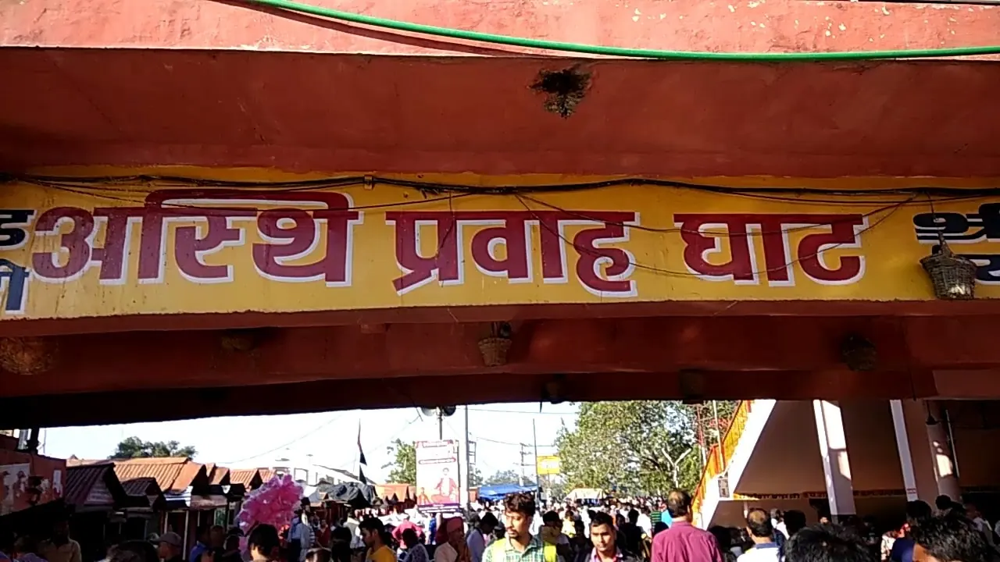

Asthi Visarjan is the holy immersion of a loved one's ashes in the Ganga river, a sacred ritual believed to guide the soul towards moksha (liberation). Har Ki Pauri, Haridwar is one of the most powerful tirths for this Vedic process. Can't travel with the asthi kalash right now? See our Online Asthi Visarjan Booking.
It is the immersion of cremated remains (asthi) of the deceased in a sacred river, especially the Ganga. This ritual purifies the soul and marks the final step toward moksha.
Haridwar is where the Ganga enters the plains and is believed to carry the soul to divine realms. The ghats of Har Ki Pauri are the most spiritually charged spot for this ritual, guided by learned Tirth Purohits.
The complete process takes around 30–40 minutes. Asthi Visarjan is performed at holy sites such as Sati Ghat, Har Ki Pauri, Brahma Kund, Asthi Prawah Ghat, or VIP Ghat in Haridwar. Just share the date of arrival and number of participants for a seamless experience.